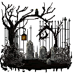

Lab04
Costume Ideas
The images I chose represent my love for Halloween. I have a small collection of costumes that I've worn over the years. This year I have about 3 costumes that I'l be wearing but I chose 3 for this project and a cute gif that I found online. 